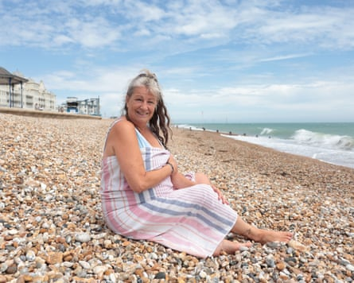
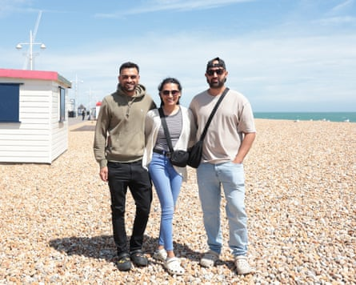
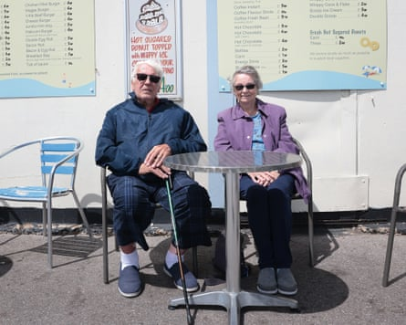
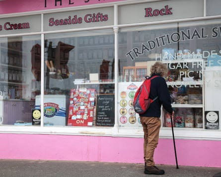

J ulia Smith was beaming on Bognor Regis beach, her toes wet after dipping them in the sparkling sea, when she discovered that her beloved home town had been named the UK’s worst seaside destination. The 58-year-old carer had some stark words for Which?, who conducted the survey.
“I think it’s a bit of snobbery,” she said. “You need to come down and see it for yourself, don’t rely on so-called reports.”
The consumer group, which said it surveyed more than 3,800 people about their travel experiences in the last year, ranked the West Sussex town last in its annual list of the UK’s best and worst seaside destinations.
Bamburgh in Northumberland took top spot in the survey, while nearby Tynemouth ranked sixth. Beer in Devon, on the Jurassic coast, came in second.
But Smith was full of praise for Bognor. Drying off on the pebbles and undeterred by the heavy winds, she said: “There’s so much here, the sea is amazing. There’s loads of places to eat as well, whether you’ve got a tenner or 100 quid to spend.”
Julia Smith: ‘There’s so much here, the sea is amazing.’Photograph: Martin Godwin/The Guardian
And that was the dream from the beginning, when Sir Richard Hotham decided to use his vast wealth, obtained by managing ships for the east India company, to realise his vision of a seaside resort in the late 18th century.
He died before a railway line sent demand soaring throughout the following century, bringing with it boarding houses and amusement arcades. And then, in 1960, came Butlin’s, the seal of authenticity for any British leisure location.
Smith, who has lived in the town for almost 20 years, was full of kind words, but she recognised some of its setbacks. “The shopping not’s great. But do you come to the seaside for the shopping or do you come for the sea?” she asked.
Regardless, she is not leaving any time soon. “We live here and we never get sick of it. I’m going on 60 but I love it.”
Those nipping to the seaside for a midweek break were equally surprised by its ranking. “Everyone’s welcomed us with a smile. It’s welcoming and friendly,” said Nabil Awan, 39, visiting with friends to celebrate his 40th birthday.
Nabil Awan (right) and friends.Photograph: Martin Godwin/The Guardian
They had just arrived but first impressions were positive. “The beach is really clean,” he said. “I’m sure there’s probably worse places.”
Ray Craddock, 85, moved to the town recently from the Midlands to be closer to his children, who live in the south-east. So far, he’s impressed. “It’s alive. It’s not fantastic in everything it’s got, but it’s a happy town. Most of the people you talk to are quite pleasant. We’re enjoying it,” he said.
He called on people to “come and look” for themselves. “It’s easy for somebody to say ‘oh yes, I’ve heard it’s bad’, but they’ve never actually been here,” he said. “How do you judge what is good and what isn’t? There’s always snobbery.”
He added: “People will think we’re stupid but we’re sitting here with a nice breeze and enjoying the sea.”
Ray and Heather Craddock: ‘It’s not fantastic in everything it’s got, but it’s a happy town,’ Ray said.Photograph: Martin Godwin/The Guardian
His wife, Heather Craddock, 82, was similarly dismissive of the report. “I disagree,” she said. Despite the bad press the town sometimes gets, tourists have seemingly not been deterred. “There’s loads of people down here,” she added.
As part of the survey, each location was graded one to five in 11 categories, which was converted into a “destination score”. Bognor Regis received the lowest score, of 36%. In second-to-last place was Bangor, with a score of 38%.
Bognor Regis was given one star for food and drink, tourist attractions, scenery, shopping, parking, peace and quiet, value for money and its seafront and pier.
Bognor has also been crowned as the sunniest place in Britain.Photograph: Martin Godwin/The Guardian
It is not the first time the town has been given the dubious honour, having been ranked last in the same survey in 2019 and 2022.
Bognor is due to get a makeover. West Sussex county council has announced £40m in funding to regenerate the town’s seafront with improvements to the esplanade being completed last month.
Historically, it was the temporary abode of an ill King George V, and the place where James Joyce began writing Finnegans Wake. Jane Austen’s unfinished novel Sanditon is thought to be set in the town.
It has also been crowned by the Met Office as the sunniest place in Britain, with more than 1,900 hours of sunshine a year.
Standing beside the historic pier, which was opened in 1865, Awan and his friends were in unanimous agreement that they would give it at least three stars. “There are better piers in the UK but it’s not a one star,” he said.